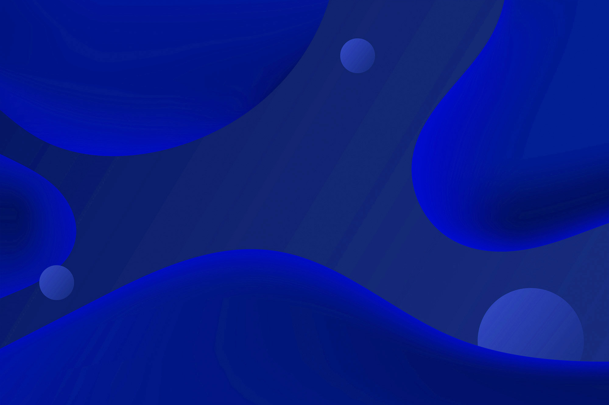
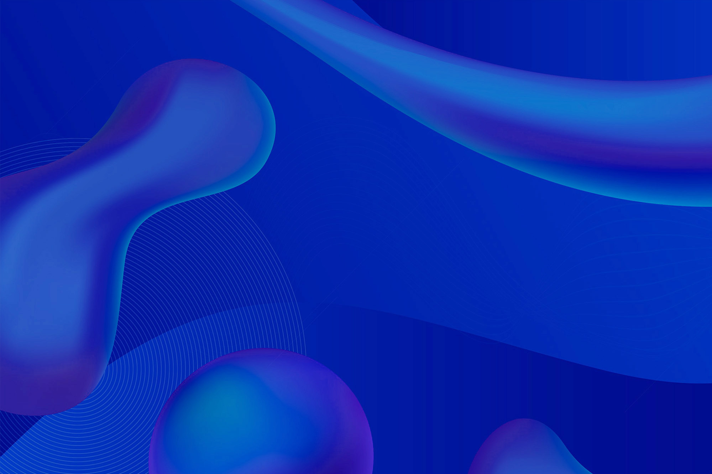
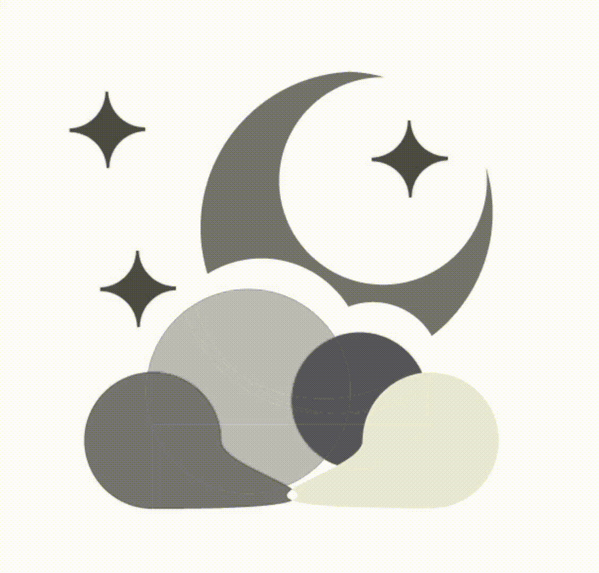

Aqui você encontrará mais informações sobre o nosso site e nossa equipe. Lembramos de que um dos nossos objetivos, com este website, é ajuda-los a ter uma noite melhor de sono, além de providência-los diversão e acolhimento. Sejam muito bem vindos.
Aqui você encontrará mais informações sobre o nosso site e nossa equipe. Lembramos de que um dos nossos objetivos, com este website, é ajuda-los a ter uma noite melhor de sono, além de providência-los diversão e acolhimento. Sejam muito bem vindos.

A Etec Parque Belém é uma escola pública criada pelo Decreto Nº 55.226, de dezembro de 2009. Ela pertence ao Centro Estadual de Educação Tecnológica Paula Souza, Autarquia do Governo do Estado de São Paulo vinculada à Secretaria de Desenvolvimento Econômico, Ciência e Tecnologia, que administra 198 Escolas Técnicas (Etecs) e 49 Faculdades de Tecnologia (Fatecs) estaduais em 155 municípios paulistas.
Suas atividades tiveram início em fevereiro de 2010, com dez turmas do Ensino Técnico de Nível Médio nos cursos de Logística, Administração, Informática, Informática para Internet, Segurança do Trabalho e Nutrição, assim como duas turmas do Ensino Médio no período matutino. Atualmente são 6 salas de Ensino Médio no período matutino, 13 salas de Ensino Técnico no período vespertino e 13 no período noturno, totalizando aproximadamente 1000 alunos.
Começamos o ensino médio na ETEC com o objetivo de termos um bom aprendizado por conta da fama que a escola tem. Com o passar do tempo, vimos que tudo o que falavam sobre esse período escolar era real, recheado de felicidade, raiva, tristeza, frustação, companheirismo e medo, percebemos o tanto de sentimentos que essa pequena fase da nossa vida causou e o quanto foi necessário aprendermos a termos controle emocional. Depois de nos desesperarmos, conhecemos pessoas que nos acalmaram, amizades que levaremos para vida e que nos relembraram que somos seres sociáveis. Aprendemos a diferença que um bom professor pode impactar nas nossas vidas, aqueles que cobram porque querem ver o melhor de nós e sabe que conseguimos nos aprimorar. Então, sim, o objetivo foi alcançado, mas mais que um bom aprendizado teórico tivemos um bom aprendizado de vida. E hoje, quando perguntarem em qual escola nos formamos, falaremos com orgulho que foi na ETEC Parque Belém e que fomos capacitados pelos melhores pedagogos. No final, sobrou apenas um sentimento, de gratidão.
"A vida é uma peça de teatro que não permite ensaios. Por isso, cante, chore, dance, ria e viva intensamente,
antes que a cortina se feche e a peça termine sem aplausos."
- Charlie Chaplin

"Renda-se, como eu me rendi. Mergulhe no que você não conhece como eu mergulhei. Não se preocupe em entender,
viver ultrapassa qualquer entendimento."
- Clarice Lispector
“O desperdício da vida está no amor que não damos, nas forças que não usamos, na prudência egoísta que nada
arrisca e que, esquivando-nos do sofrimento, perdemos também a felicidade.”
- Mary Cholmondeley

"O segredo da criatividade está em dormir bem e abrir a mente para as possibilidades infinitas. O que é um
homem sem sonhos?"
- Albert Einstein
Nossa logo é baseada na proporção aurea, isto é, desenvolvida apenas por círculos de tamanhos únicos, resultando assim, em uma imagem com suas proporções presentes em corpos da natureza.
Usamos a proporção áurea para guiar o desenvolvimento da nossa logo, pois queríamos que resultasse em uma composição visual orgânica e natural, que fosse esteticamente prazeroso de olhar.
A Lua crescente presente na ilustração corresponde à fase após a lua nova e anterior à lua cheia. Há algumas teorias que relatam a influência dessa fase com o nosso sono. Pesquisadores se juntaram e publicaram um estudo na revista Science Advances, onde constataram que as pessoas tendem a dormir mais tarde e dormir menos horas nos dias que antecedem a Lua cheia.
Uma das explicações seria que essas noites têm mais luz no céu após o anoitecer, já que a Lua crescente fica cada vez mais luminosa nos dias que antecedem a Lua cheia.
Refletindo sobre essa tese, concluímos que a lua crescente traz a conceituação de insônia. As nuvens com estrela por sua vez, remetem ao sono. Logo, posicionamos a nuvem à frente da lua com algumas estrelas para difundir a ideia de abrigo e paz para noites atribuladas. Assim, é fácil concluir que nosso site é um refúgio para pessoas que enfrentam essas dificuldades, então não se sentirão solitárias.
